Gêmeo Digital para Apoio à Decisão em Manutenção Aeronáutica
MANUAL DO USUÁRIO — PILOTO DE TESTES
✈ 🛩️ 🚁 ✈️ 🛫
Versão do documento: 1.0 · Agosto de 2026
Uso conjunto: pilotos, mecânicos, engenheiros e cientistas — FAB · ITA · Embraer
Sumário
1
O que é o AFA-TWIN
3
2
Acessando o sistema
4
3
Painel de Apoio à Decisão
5
4
Aeronaves — Cadastro e Pesquisa Visual
7
5
Detalhe da aeronave (Componentes, Confiabilidade, Inspeção, Pessoal)
9
6
Manutenção — Ordens de Serviço e Cadastro de Manutenção
13
7
Diagnóstico Inteligente
16
8
Planejamento — Disponibilidade e Análise Prospectiva
17
9
Protocolos e Checklists
18
10
Usuários — Cadastro, Grupos e Cadastros Auxiliares
19
11
Meu Perfil
22
12
Auditoria
23
13
Uso em tablet
24
14
Perguntas frequentes
25
1O que é o AFA-TWIN
O AFA-TWIN é um piloto de testes de aplicativo web (instalável também como aplicativo em tablet) para
controle e gerenciamento de manutenção de aeronaves militares. Ele nasceu de um estudo sobre Digital
Twin como "cérebro" de apoio à decisão em manutenção aeronáutica, e foi construído para uso conjunto
por pilotos, mecânicos, engenheiros, cientistas e gestores da FAB, do ITA e da Embraer.
Objetivo principal
Reduzir o risco de desgaste não percebido de peças e apoiar o cumprimento de protocolos rigorosos de
manutenção, através de:
Controle de vida útil de componentes (por horas de voo e por vigência de calendário);
Alertas automáticos de vencimento, com notificação aos responsáveis (indivíduos e equipes);
Indicadores reais de Confiabilidade (MTBF/MTTR) e um modelo de Risco Operacional ponderado;
Um Diagnóstico Inteligente que aprende com o histórico de manutenções da própria frota;
Trilha de auditoria completa de tudo que é cadastrado ou alterado.
Importante sobre os dados de exemplo: a frota, o pessoal, os esquadrões e as bases
exibidos nesta versão são fictícios/ilustrativos, criados apenas para demonstrar o funcionamento do
sistema. A única exceção é a aeronave A-29 Super Tucano "FAB 5962", usada como
referência direta do estudo original do projeto.
Perfis de acesso
O sistema reconhece cinco perfis, cada um com uma tela inicial e permissões adequadas ao seu papel:
🎖️
Piloto — livro de bordo, discrepâncias, aceitação da aeronave.
🔧
Mecânico — ordens de serviço, componentes, inspeção fotográfica.
Cientista — dados agregados da frota, diagnóstico, P&D.
🗂️
Gestor / Responsável Técnico — acesso completo, incluindo exclusões e auditoria.
2Acessando o sistema
Não existe cadastro público: contas são criadas apenas pelo Gestor, no módulo Usuários.
Isso já restringe o acesso somente às pessoas cadastradas pela sua organização.
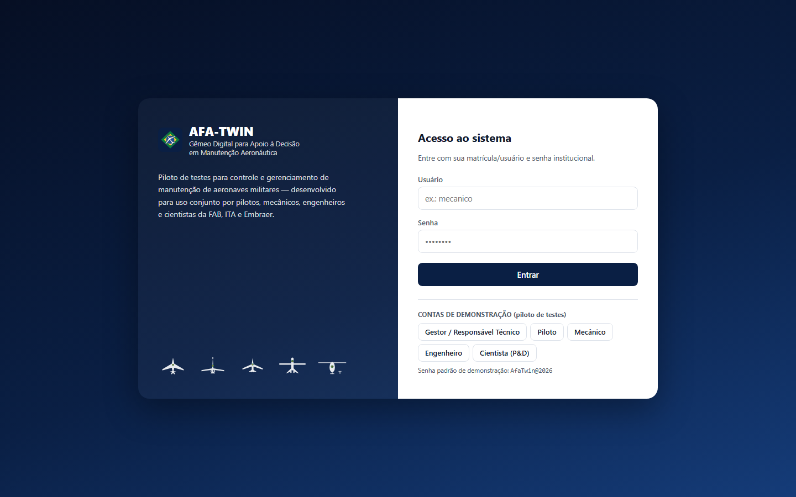
Tela de login — usuário/matrícula e senha institucional. Botões de acesso rápido preenchem
credenciais de demonstração para cada perfil.
Como entrar
Acesse o endereço do AFA-TWIN no navegador (computador) ou abra o aplicativo instalado (tablet).
Informe seu usuário e senha.
Clique em Entrar.
Troque a senha padrão de demonstração (AfaTwin@2026) assim que possível,
em Meu Perfil, antes de usar o sistema com dados reais.
Instalando como aplicativo no tablet
Android (Chrome)
Menu ⋮ → "Adicionar à tela inicial" / "Instalar aplicativo".
iPad (Safari)
Botão de compartilhar → "Adicionar à Tela de Início".
O ícone do AFA-TWIN aparecerá como um aplicativo normal, abrindo em tela cheia.
3Painel de Apoio à Decisão
É a tela inicial após o login: um resumo executivo da frota, alertas ativos e o histórico
recente de notificações.
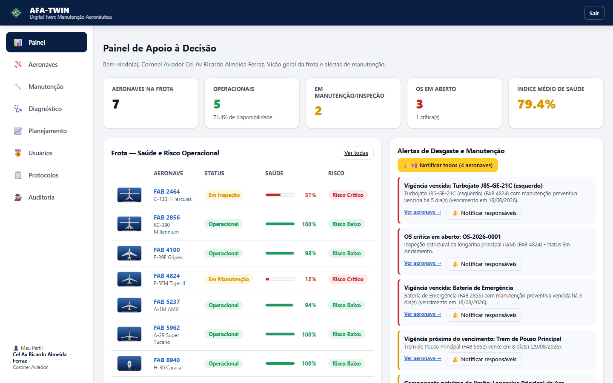
Painel — indicadores da frota, saúde/risco por aeronave, notificações recentes e alertas ativos.
O que você encontra aqui
Cartões de indicadores: total de aeronaves, disponibilidade, OS em aberto, índice médio de saúde.
Tabela da frota: saúde e risco operacional de cada aeronave, com acesso direto ao detalhe.
Notificações recentes: as últimas 20 notificações enviadas (e-mail/SMS/WhatsApp) aos responsáveis.
Alertas de Desgaste e Manutenção: cada alerta tem um botão 🔔 Notificar responsáveis
individual, e existe um botão 🔔📢 Notificar todos para avisar, de uma vez,
todos os responsáveis de todas as aeronaves com peças vencendo.
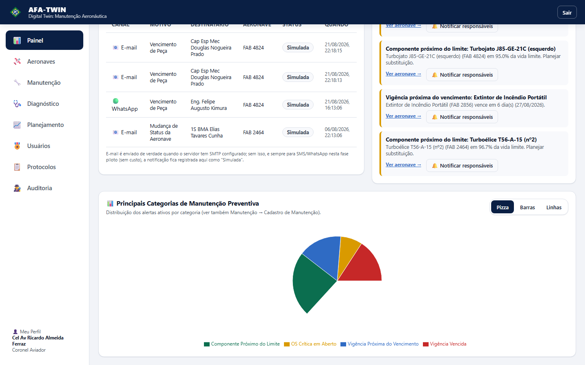
Gráfico de categorias de manutenção preventiva, no final do Painel — alternável entre
pizza, barras e linhas.
Dica: o gráfico mostra a distribuição dos alertas ativos por categoria (Vigência Vencida,
OS Crítica em Aberto, Componente Próximo do Limite, Vigência Próxima do Vencimento) — útil para identificar
rapidamente onde concentrar esforço de manutenção.
4Aeronaves — Cadastro e Pesquisa Visual
O módulo Aeronaves tem duas sub-telas: Cadastro (gestão administrativa) e
Pesquisa (busca visual por foto).
4.1 Cadastro
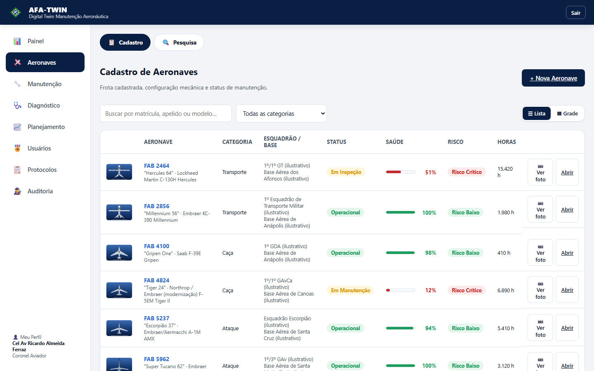
Lista administrativa da frota — alterne entre visão em Lista ou em Grade, filtre por categoria.
Clique em + Nova Aeronave para cadastrar uma nova aeronave.
Clique na matrícula para abrir o detalhe completo.
Use "📷 Ver foto" para visualizar a foto (real ou ilustrativa) sem sair da lista.
4.2 Pesquisa Visual
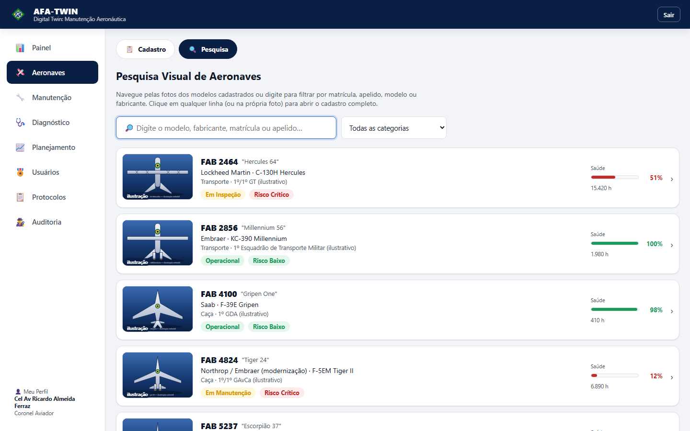
Pesquisa visual — digite para filtrar instantaneamente, ou navegue pelas fotos e clique
diretamente na linha para abrir o cadastro completo.
5Detalhe da Aeronave
Ao abrir uma aeronave, seis abas organizam toda a informação: Visão Geral, Componentes,
Manutenção, Confiabilidade & Risco, Inspeção Fotográfica e Pessoal.
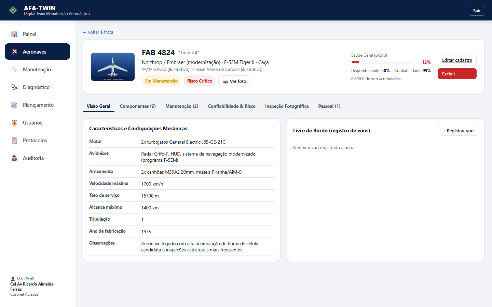
Visão Geral — características, configuração mecânica e livro de bordo simplificado.
5.1 Componentes
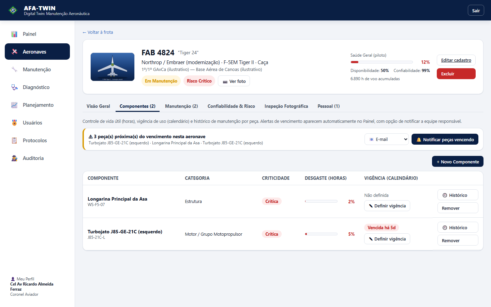
Controle de desgaste por horas e vigência por calendário, com alerta e botão de
notificação por aeronave, e histórico de manutenção por peça.
✎ Definir vigência: informe o intervalo de manutenção preventiva (em dias) e a próxima data de vencimento.
🕘 Histórico: mostra as ordens de serviço já executadas naquela peça específica, com equipe e responsável.
A barra de alerta no topo soma todas as peças vencendo desta aeronave, com botão de notificação direta.
5.2 Confiabilidade & Risco
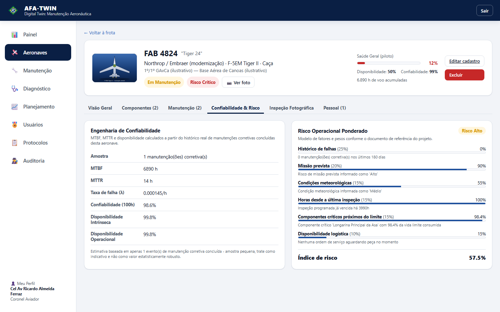
MTBF/MTTR calculados a partir do histórico real de corretivas, e o modelo de Risco
Operacional ponderado (6 fatores, pesos exatos do estudo de origem).
5.3 Inspeção Fotográfica
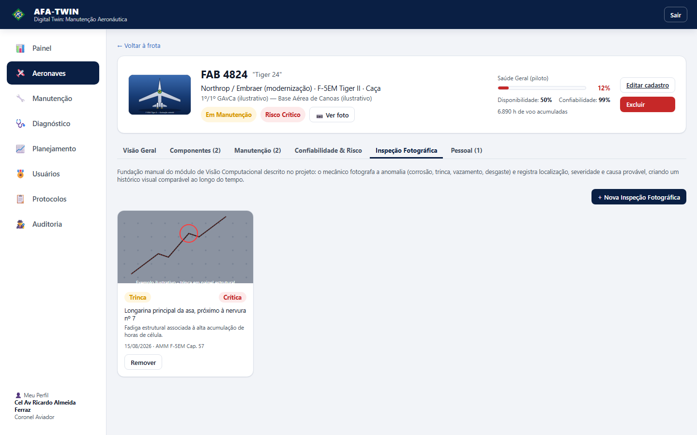
Fundação do futuro módulo de Visão Computacional: o mecânico anexa a foto de uma
anomalia (corrosão, trinca, vazamento, desgaste) e preenche localização, severidade e causa provável.
5.4 Pessoal (individuais + grupos)
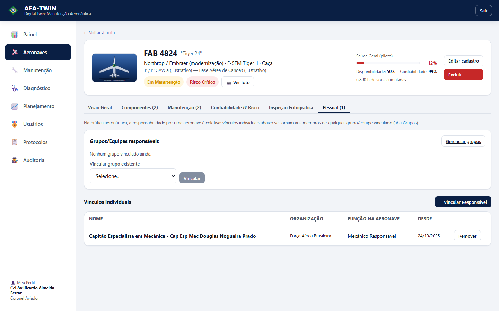
Responsabilidade coletiva: grupos/equipes vinculados à aeronave somam-se aos vínculos individuais.
5.5 Cadastrando uma nova aeronave
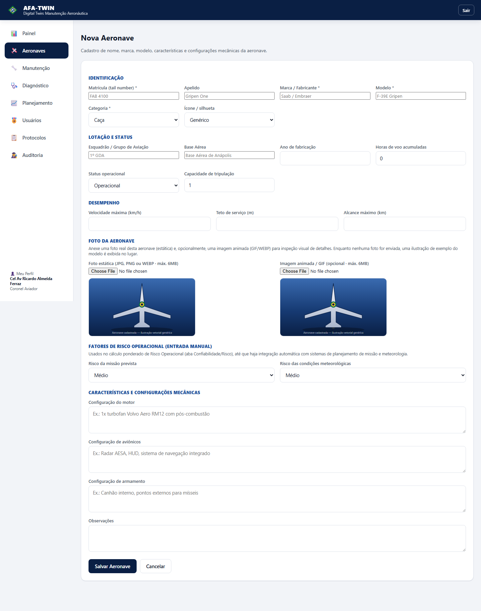
Formulário completo: identificação, lotação, desempenho, foto (estática e animada) e
configuração mecânica.
6Manutenção
Duas sub-telas: Ordem de Serviço (o dia a dia da manutenção) e
Cadastro de Manutenção (catálogos de apoio).
6.1 Ordens de Serviço
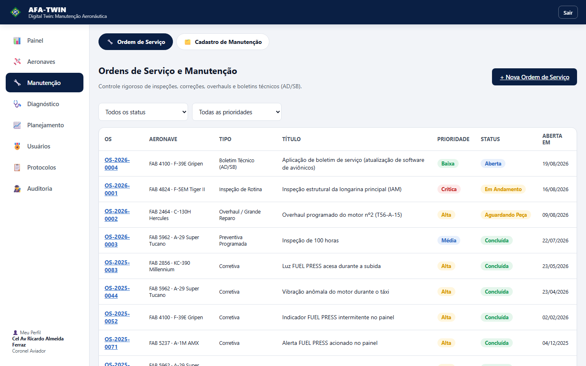
Lista de OS com filtro por status e prioridade.
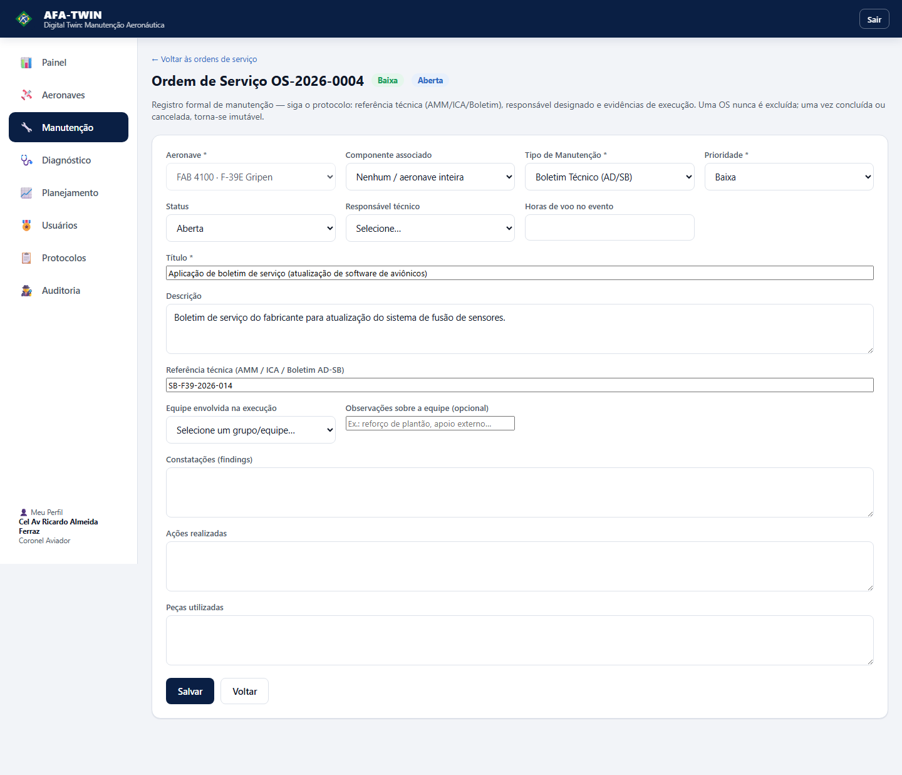
Detalhe de uma OS: tipo, prioridade, equipe/grupo responsável, referência técnica.
Regra importante: uma Ordem de Serviço nunca é excluída. Uma vez Concluída
ou Cancelada, ela fica travada para qualquer alteração — é o registro
permanente do que foi feito. Cancelar uma OS exige informar o responsável pelo cancelamento; o grupo
responsável pela aeronave é notificado automaticamente.
6.2 Cadastro de Manutenção
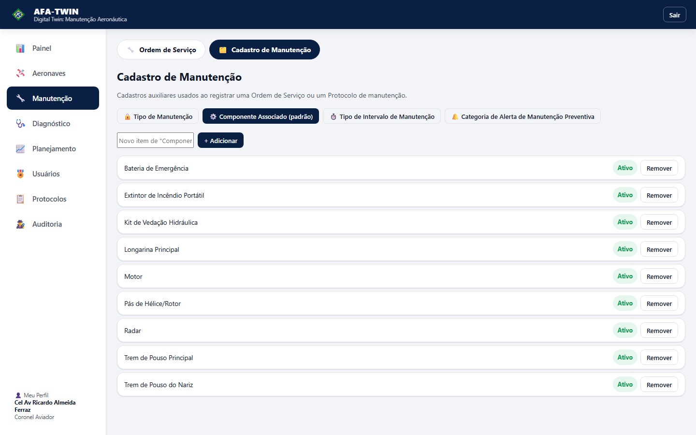
Componente Associado (padrão), Tipo de Intervalo de Manutenção e a referência fixa do
Tipo de Manutenção — a mesma lista usada na Ordem de Serviço.
7Diagnóstico Inteligente
Descreva um sintoma (uma luz de alerta, um ruído, uma vibração) e o sistema procura
ocorrências semelhantes em toda a frota, indicando a ação mais comum usada para resolvê-las.
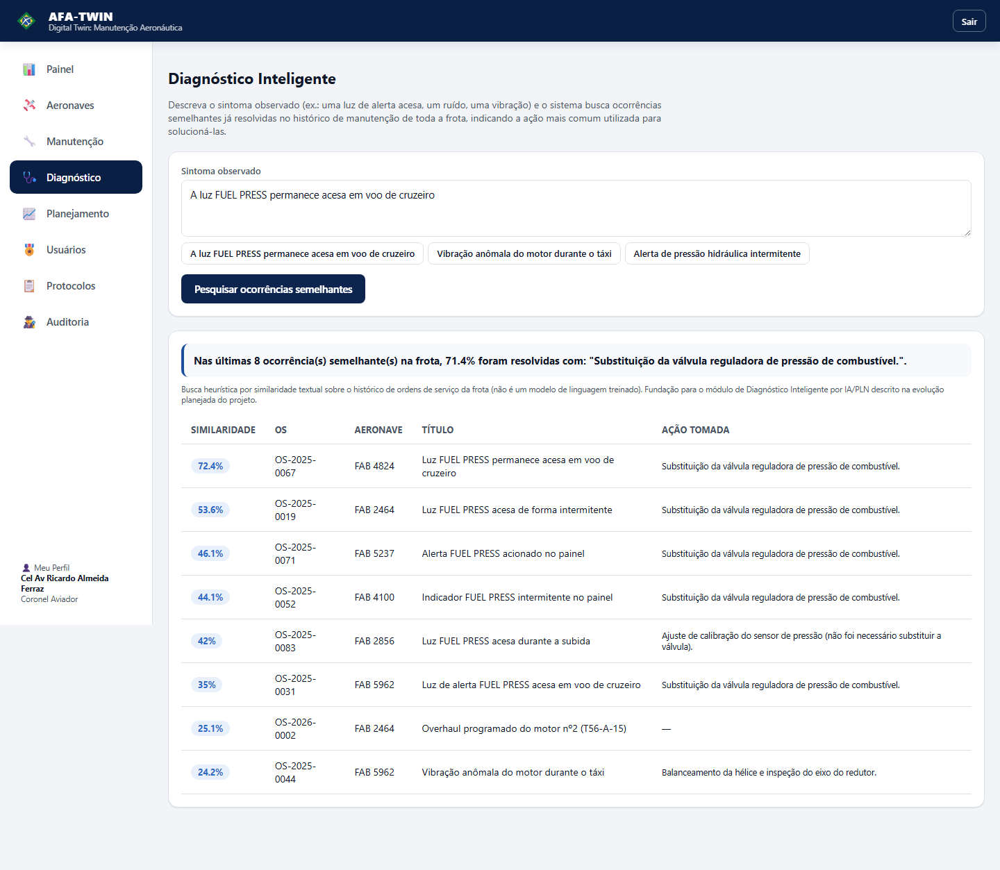
Exemplo real do sistema: busca por "a luz FUEL PRESS permanece acesa" encontrando 8
ocorrências semelhantes na frota e a ação predominante para resolvê-las.
Esta é uma busca heurística por similaridade de texto sobre o histórico real de Ordens de Serviço — não é
um modelo de linguagem treinado. É a fundação para o módulo de IA/PLN mais avançado, previsto na evolução do projeto.
8Planejamento
Duas ferramentas de apoio estratégico, lado a lado.
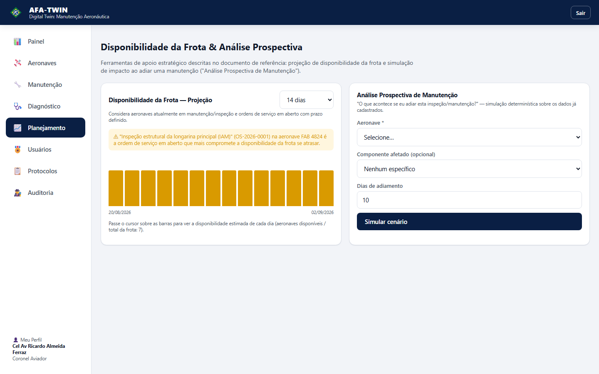
Disponibilidade da Frota projetada (7/14/30 dias) e o simulador "Análise Prospectiva
de Manutenção" — "o que acontece se eu adiar esta inspeção?".
Disponibilidade da Frota: projeta quantas aeronaves estarão disponíveis nos próximos dias.
Análise Prospectiva: escolha uma aeronave, um componente e um número de dias de adiamento —
o sistema estima o impacto na saúde, no risco, na disponibilidade e um custo financeiro ilustrativo.
9Protocolos e Checklists
Modelos reutilizáveis de inspeção, vinculados a um modelo de aeronave e a um documento de referência.
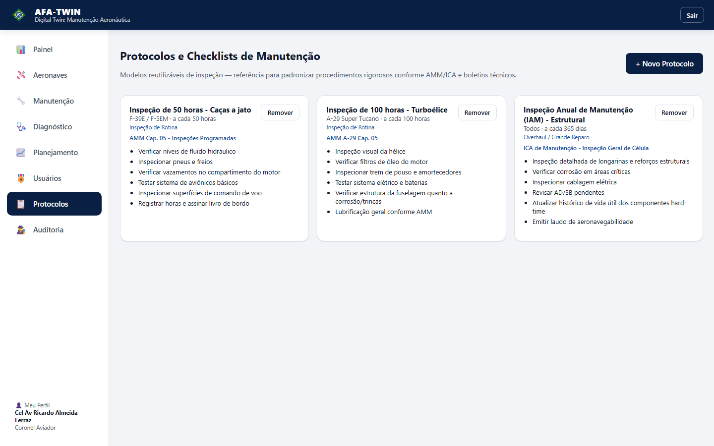
Protocolos cadastrados — modelo de aeronave selecionado por listbox, com as etapas do checklist.
10Usuários
Três sub-telas: Usuários, Grupos e Cadastros Auxiliares.
10.1 Cadastro de Usuários
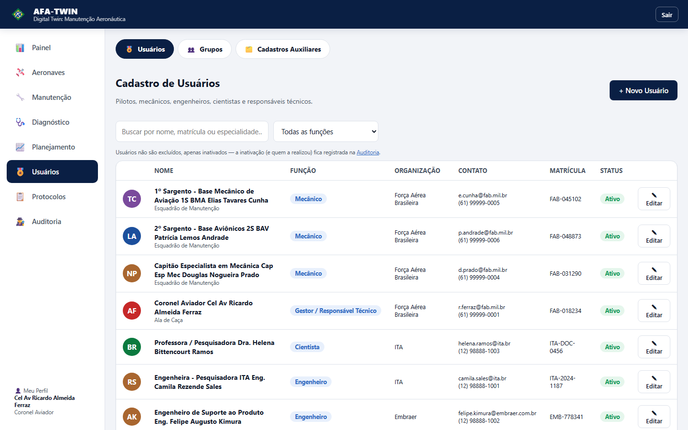
Lista de usuários com avatar, contato e status.
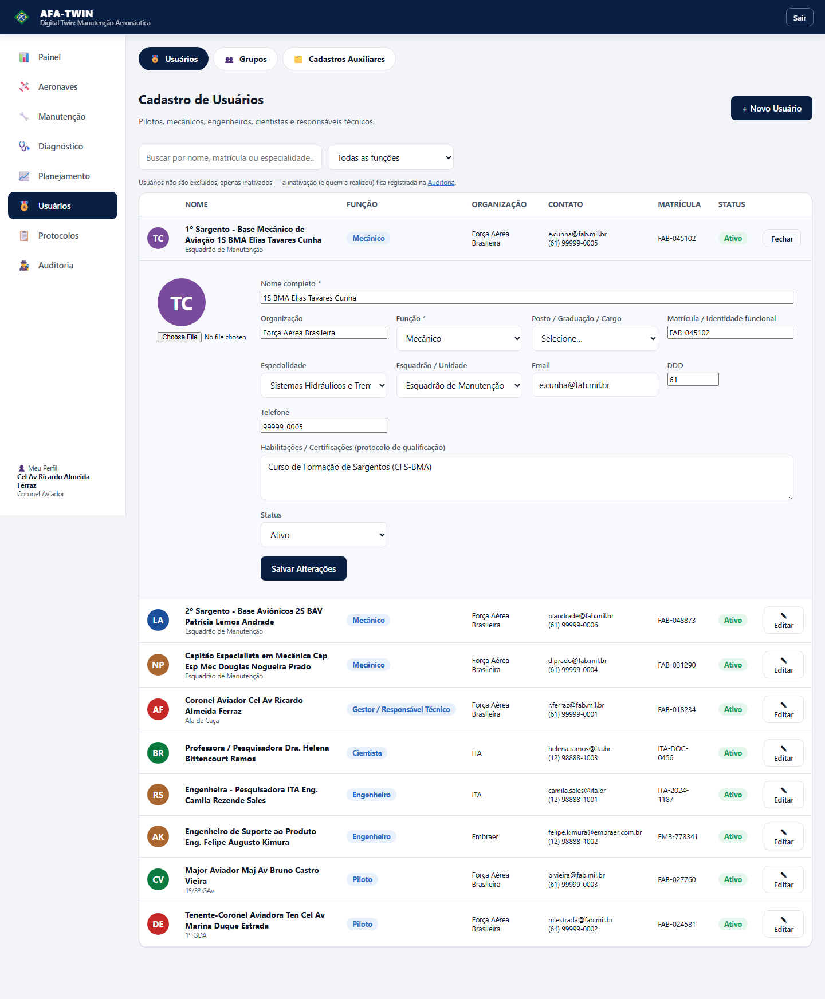
Edição completa: todos os campos do cadastro, incluindo foto, com Especialidade,
Esquadrão e Posto/Graduação como listbox.
Usuários não são excluídos, apenas inativados — quem inativou e quando fica registrado na Auditoria.
10.2 Grupos e Equipes Responsáveis
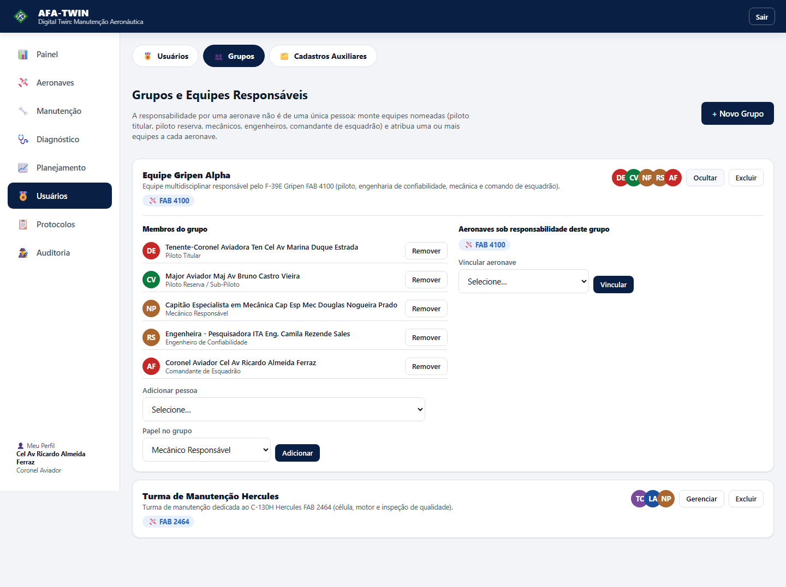
Um grupo reúne piloto titular, piloto reserva, mecânico, engenheiro e comandante de
esquadrão — atribuível a uma ou mais aeronaves.
10.3 Cadastros Auxiliares
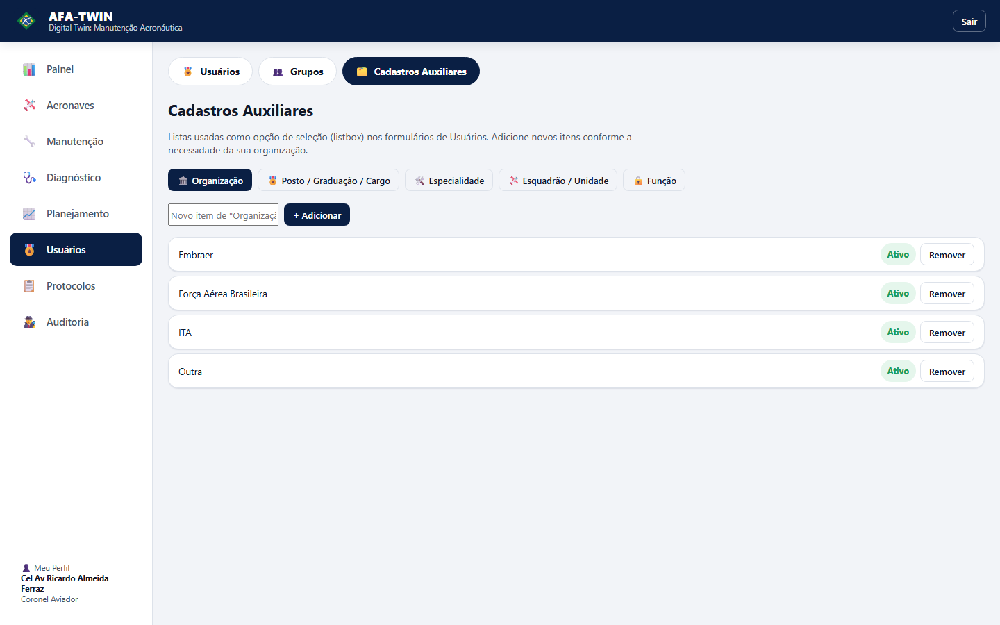
Organização, Posto/Graduação/Cargo, Especialidade e Esquadrão/Unidade — listas
editáveis usadas nos formulários de Usuários.
11Meu Perfil
Todo usuário edita sua própria foto, e-mail e telefone — os dados usados para receber alertas.
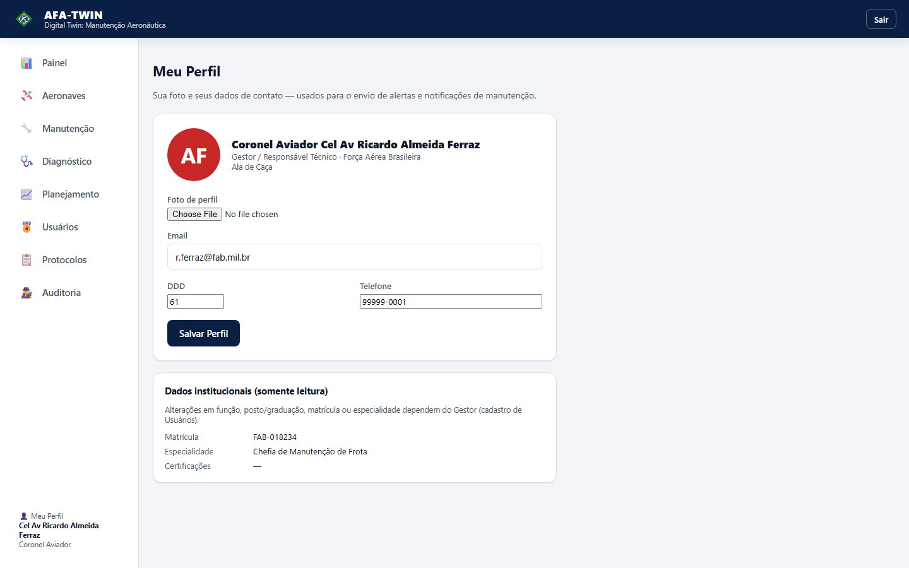
Meu Perfil — clique no seu nome, no topo, para chegar aqui a qualquer momento.
12Auditoria
Toda criação, alteração, inativação ou cancelamento de cadastro fica registrada: quem, quando e o quê.
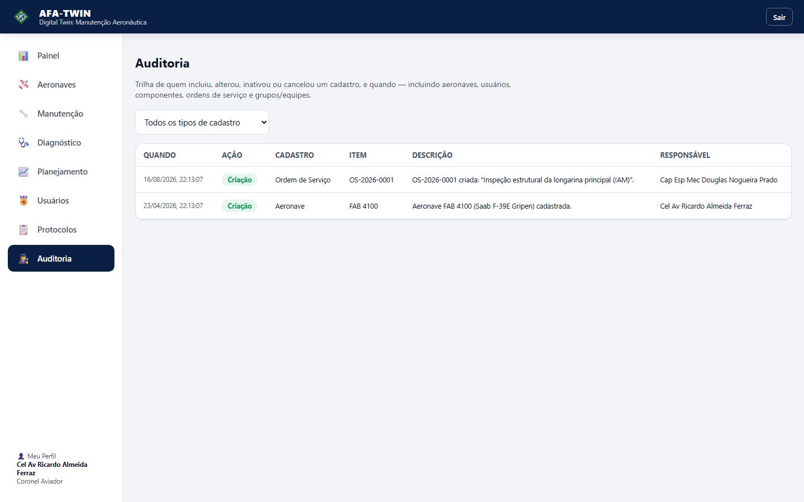
Trilha de auditoria, filtrável por tipo de cadastro.
13Uso em Tablet
Em telas menores, o menu lateral vira uma barra de navegação inferior, com toque otimizado
para uso em hangar.
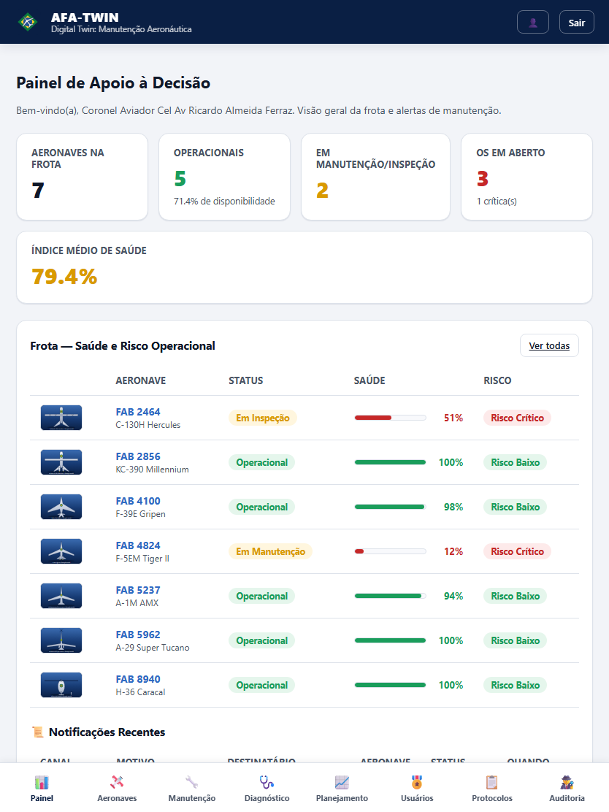
Painel em formato tablet (retrato) — mesma funcionalidade, navegação inferior.
14Perguntas Frequentes
Esqueci minha senha, e agora?
Solicite ao Gestor da sua organização que atualize sua senha — não há recuperação automática nesta fase piloto.
Por que uma notificação aparece como "Simulada"?
E-mail é enviado de verdade apenas quando o servidor tem SMTP configurado. SMS e WhatsApp são sempre
simulados nesta fase (exigem contratar um serviço pago de terceiros) — mas ficam registrados no histórico
normalmente, para você testar o fluxo completo sem custo.
Por que não consigo excluir um usuário ou uma Ordem de Serviço?
É proposital: usuários só são inativados, e ordens de serviço concluídas/canceladas ficam travadas — isso
preserva o histórico completo para auditoria, como em qualquer sistema de manutenção aeronáutica real.
Os dados desta versão são reais?
Não. É um piloto de testes com dados fictícios/ilustrativos, exceto a aeronave A-29 "FAB 5962", citada
como exemplo no estudo de origem do projeto.